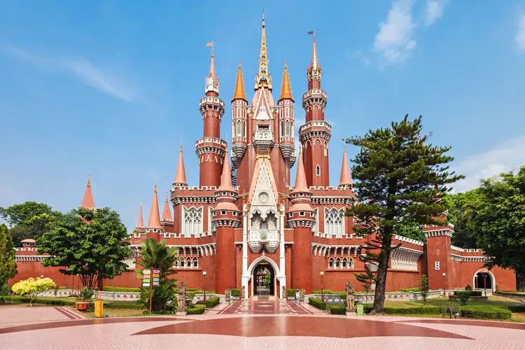

Taman Mini Indonesia Indah
Wisata Jakarta yang pertama adalah Taman Mini Indonesia Indah atau yang lebih dikenal dengan singkatan TMII. TMII merupakan salah satu tempat wisata yang di dalamnya terdapat banyak sekali wahana untuk dinikmati.
Terdapat miniatur rumah adat, taman bunga, taman dinosaurus, gedung teater, hingga museum yang bisa kita datangi di TMII. Masing-masing wahana ini memiliki harga tiket masuk sendiri dan Moms bisa memilih wahana mana yang ingin dimasuki. Salah satu ikon wahana TMII yang paling banyak dikunjungi adalah istana anak-anak Indonesia yang gedungnya berbentuk kastil megah berwarna kemerahan. TMII memiliki area yang sangat luas sehingga disarankan untuk membawa kendaraan pribadi atau menyewa sepeda sehingga Moms tidak kelelahan saat berjalan-jalan di dalamnya.
